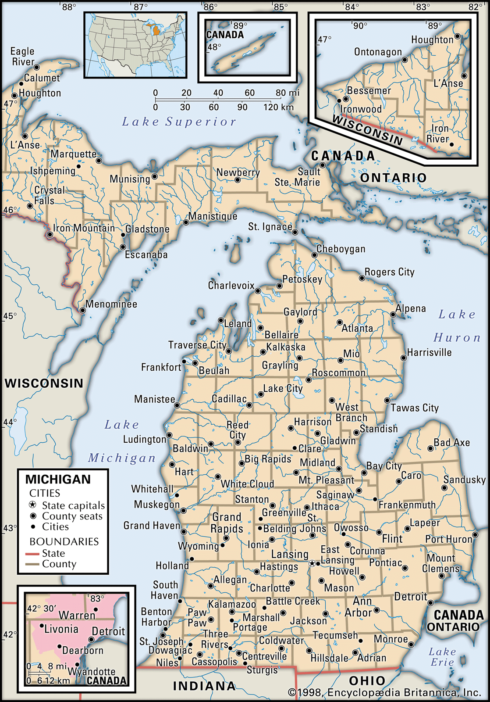

Discover the Great State of Michigan
Michigan, located in the Great Lakes region, is known for its beautiful natural landscapes, vibrant cities, and rich history. From the iconic Mackinac Bridge to the bustling streets of Detroit, Michigan offers something for everyone.
Whether you’re exploring the beaches along Lake Michigan or enjoying the fall colors in the Upper Peninsula, Michigan is full of adventure and opportunities to discover new places.
Fun Facts About Michigan
- Michigan has the longest freshwater coastline of any state in the U.S.
- It is home to more than 11,000 inland lakes.
- Detroit is known as the "Motor City" due to its automotive industry.
Top Attractions in Michigan
- Mackinac Island
- Sleeping Bear Dunes
- Detroit Institute of Arts
Michigan Cities Population
| City | Population (Approx) | Region |
|---|---|---|
| Detroit | 639,111 | Southeastern Michigan |
| Grand Rapids | 198,917 | Western Michigan |
| Lansing | 112,644 | Central Michigan |
Important Announcement
Stay updated with the latest news and events in Michigan. Check official sources for travel advisories.
Special Update!
Please be aware that seasonal changes might affect park access or event schedules. We recommend confirming details before your visit.